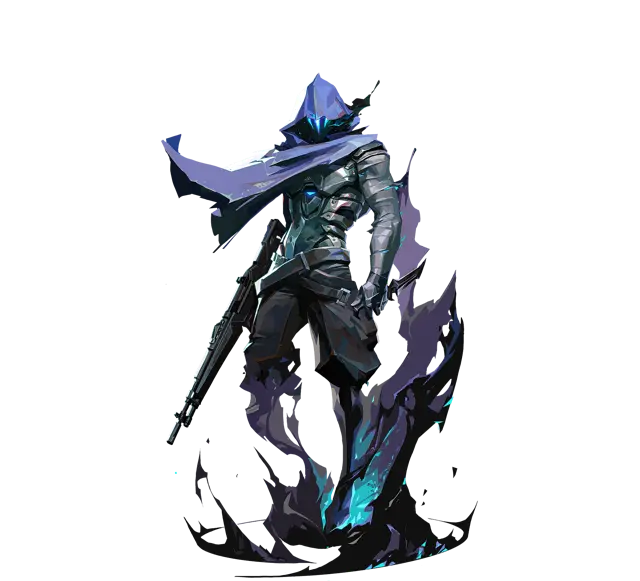

01Su trabajo
Usa la flash (la paranoia) al contacto: cuando ya sabes que hay alguien, no al voleo.
AltiEs controlador: todo lo del rol (cuándo humear, dónde pararte, no morir primero) está en la página del controlador. Acá va lo propio de Omen.
02Habilidades
Shrouded Step
Después de un instante, te teletransportas a un lugar cercano. Sirve para cambiar de ángulo o aparecer donde no te esperan. Hace ruido: no lo uses pegado al rival.

Paranoia
Un proyectil que atraviesa paredes y deja casi ciegos y sordos a todos los que toca, también a tus compas si van adelante. Es su flash.
Dark Cover
Su humo. Entras a la vista de sombra, eliges dónde va (puedes acercarlo o alejarlo) y lo tiras. Se recarga con el tiempo.
From the Shadows
La ulti: te teletransportas a cualquier lugar del mapa. Mientras llegas eres una sombra que te pueden romper. Sirve para flanquear, rotar rápido o salvar el arma.
03La compra
Omen
Ghost, Paranoia. Otra opción: Classic, Dark Cover (uno extra), Paranoia, Shrouded Step.
 Ghost
Ghost Classic
Classic
Después de la pistola
Tus humos, siempre
Los dos humos aunque sea eco: sin humo, la eco es correr a morir. Si sobra, una pistola barata.
Humos y algo para pelear
Humos completos, una Spectre o Bulldog y escudo ligero. Primero la utilidad, después el arma.
Todo
Rifle, escudo pesado y toda tu utilidad: humos, flash o molly. En las rondas grandes no te guardes nada.
04En ataque
- Al empezar, guarda los humos: un humo al segundo 0 no tapa nada que importe.
- Paranoia en la entrada solo si tu duelista entra al toque con ella: "te tiro paranoia, salta y dale".
- Después de humear, el TP te sirve para cambiar de ángulo y castigar al que cruza, no para entrar solo al site.
- Guarda un humo para el post-plant: el humo en la spike gana rondas.
05En defensa
- Humo al contacto: apenas escuchas que vienen o matan a tu compa.
- Paranoia cuando entran todos juntos: los deja ciegos para que tu equipo los castigue.
- La ulti te deja rotar a un retake o aparecer por la espalda del que planta. Úsala con info, no al voleo.
- No te mandes solo a dominar una zona: si te matan, el equipo se queda sin humos en los dos sites.
06Por mapa
Los humos de cada mapa, con mis tableros y mis capturas en el juego, están en la guía de humos. Elige el mapa: